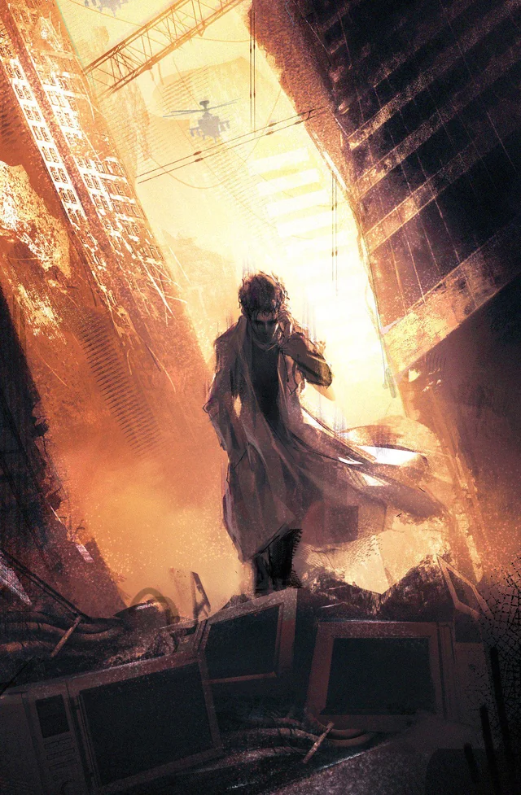

Gallery

Caption:The Past is Calling
Credit: cancerbossX
Caption:GEASS - The Power of Absolute Obedience!
Credit: wns21Tenor
Caption:Fanmade Cosplay Video of Link Click
Credit: bakaworuYoutube
Caption:Sword Art Online Trailer (By: VidereMemoria)
Credit: VidereMemoriaYouTube
Caption:Masterpeice Cover of Swordland - Main Theme of Sword Art Online
Credit: NaPPPYoutube
Caption:To Be Hero X - The Most Stylish Anime Fight You'll Ever See
Credit: CrunchyrollYoutube